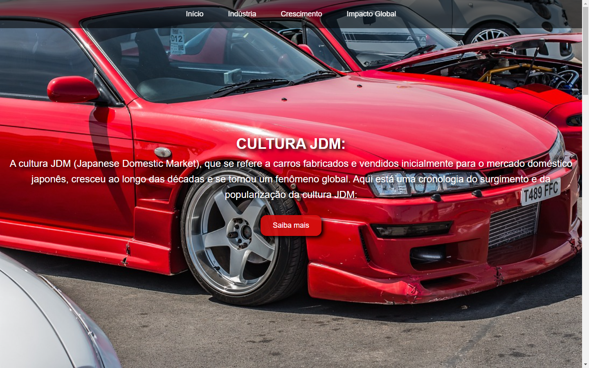
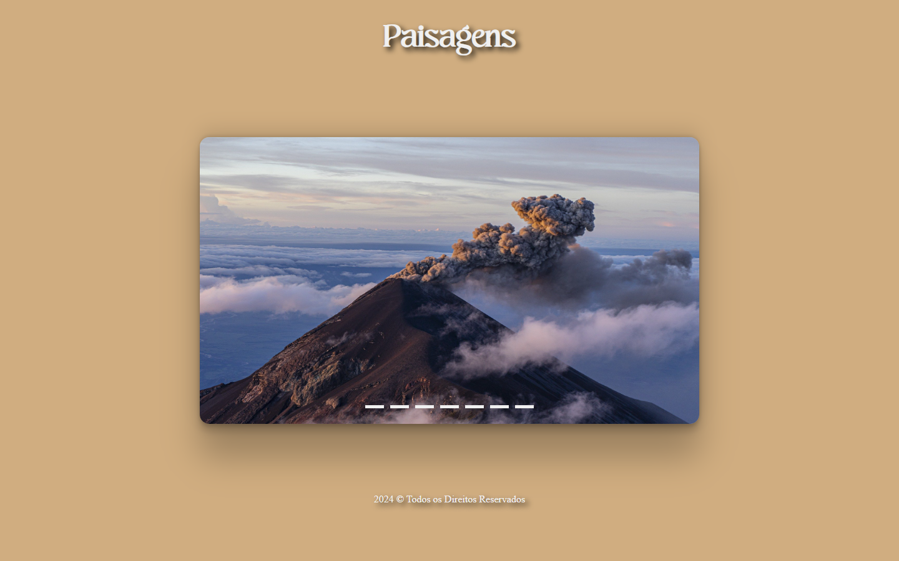
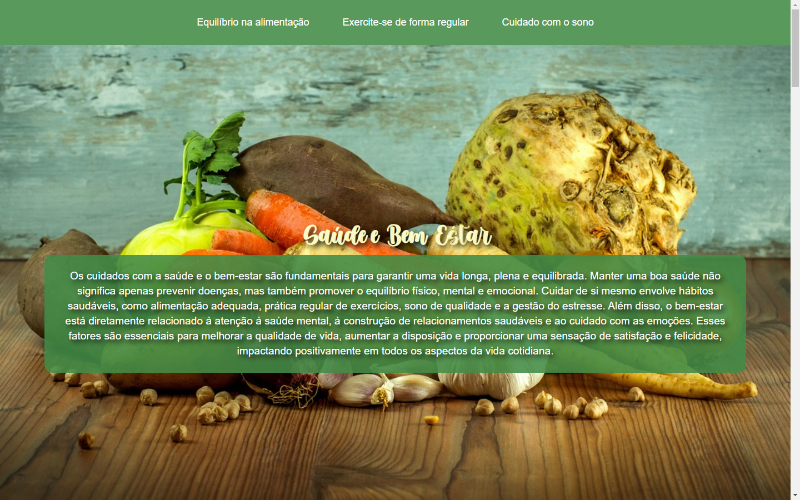
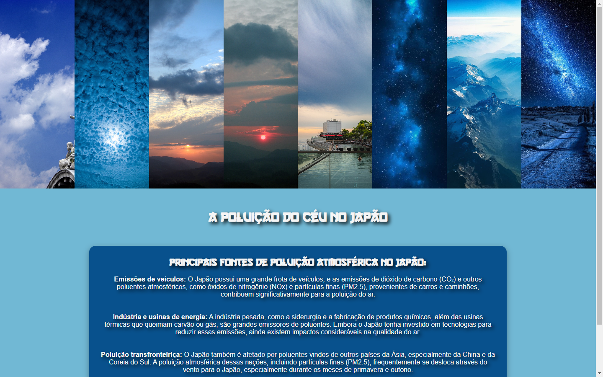

Meu nome é Thomas e eu sou desenvolvedor web. Tenho experiência intermediária com criação de jogos em Scratch, com o curso que fiz, consegui vender meu primeiro projeto. Com Scratch comecei a me interessar por programação e procurar mais sobre. No momento estudo programação web no Instituto da Oportunidade Social (IOS), e pretendo seguir carreira na área de programação web.
Neste projeto, fui responsável pela criação e implementação de uma landing page com foco em conversão para [inserir objetivo específico, como "capturar leads", "venda de produtos", "promoção de um evento", etc.]. O principal objetivo da página era oferecer uma experiência de usuário otimizada, com um design simples, direto e altamente funcional, para maximizar o número de interações e alcançar os objetivos de marketing da empresa.
Neste projeto, fui responsável pela implementação de um efeito carrossel (ou slider) para exibição de múltiplos conteúdos em uma única área da página, com o objetivo de melhorar a experiência do usuário e otimizar o design responsivo do site.
Neste projeto, fui responsável pela implementação do efeito paralaxe em uma página web, com o objetivo de criar uma experiência imersiva e interativa para os usuários. O efeito paralaxe consiste no movimento de diferentes camadas de conteúdo em velocidades distintas, criando uma sensação de profundidade e dinamismo enquanto o usuário rola pela página.
Neste projeto, fui responsável pela implementação do efeito paralaxe em uma página web, com o objetivo de criar uma experiência imersiva e interativa para os usuários. O efeito paralaxe consiste no movimento de diferentes camadas de conteúdo em velocidades distintas, criando uma sensação de profundidade e dinamismo enquanto o usuário rola pela página.
